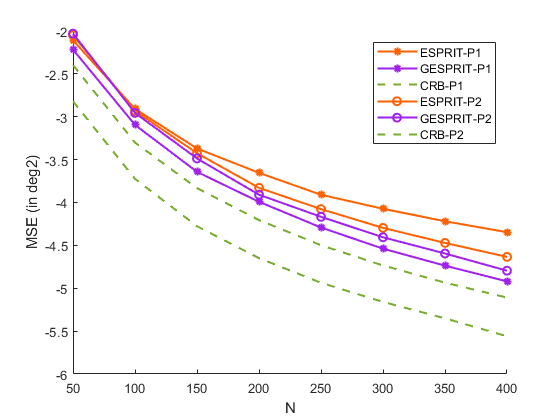

% MSE versus array size N for different signal matrix clear; N_list = 50:50:400; nb_Loop = 800; snr = 5; sigma2 = 1; k = 2; theta_true = zeros(1,k); ESPRIT_MSE = zeros(nb_Loop,1); GESPRIT_MSE = zeros(nb_Loop,1); CRB_MC = zeros(nb_Loop,1); CRB_Theory = zeros(2,length(N_list)); ESPRIT_MSE_E = zeros(2,length(N_list)); GESPRIT_MSE_E = zeros(2,length(N_list)); for it = 1:length(N_list) N = N_list(it); T = 2*N; c = N/T; testcase = 'closely'; switch testcase case 'widely' min_sep = pi/20; theta_true = [-0.8*pi,-pi*0.22,0,pi/4,pi*2/5]; theta_true1 = todeg(theta_true); n = N-1; delta = 1; case 'closely' theta_true = [0,0.8*2*pi/N]; theta_true1 = todeg(theta_true); % to physical angle, then to degree delta = floor(N/3); n = N-delta; end clear i a = @(theta) exp(1i*theta*(0:N-1)')/sqrt(N); diffa = @(theta) exp(1i*theta*(0:N-1)') *1i .*(0:N-1).' /sqrt(N); A = []; diffA = []; for tmp_index=1:length(theta_true) A = [A a(theta_true(tmp_index))]; diffA = [diffA diffa(theta_true(tmp_index))]; end Df = diffA; for ii = 1:2 for jj = 1 : nb_Loop switch ii case 1 P = generate_random_P_wishart(k, k); case 2 P = generate_random_P_eig(k, 0.5, 2.0); end [~,D] = eig(A*P*A','vector'); [D, ~] = sort(D,'descend'); pow = db2pow(snr)/D(k); P1 = pow*P; % power matrix, target snr % [~,E] = eig(A*P1*A','vector'); % [E, ~] = sort(E,'descend'); % rho = real(E(1:k).')/sigma2; % > sqrt(c) % gg_true = (1-c*rho.^(-2))./(1+c*rho.^(-1)); % kk_true = n/N*(c+c*rho.^(-1))./(c+rho); S = sqrt(1/2) *sqrtm(P1)*(randn(k,T) + 1i *randn(k,T)); Z = sqrt(sigma2/2) * (randn(N,T) + 1i* randn(N,T)); X = A*S + Z; SCM = X*(X')/T; [U,eigs_SCM] = eig(SCM,'vector'); [eigs_SCM, index] = sort(eigs_SCM,'descend'); U = U(:, index); U_S = U(:,1:k); lambda_bar = eigs_SCM(1:k); if lambda_bar>=(1+sqrt(c))^2 ell_estim = (lambda_bar-(1+c))/2 + sqrt((lambda_bar-(1+c)).^2 - 4*c)/2; gg = (1-c*ell_estim.^(-2))./(1+c*ell_estim.^(-1)); kk = 1-gg; else gg = ones(k,1); kk = zeros(k,1); end ESPRIT_Theta = GetESPRITE(U_S,n,delta); GESPRIT_Theta = GetGESPRITE(U_S,n,delta,gg,k); ESPRIT_Theta = todeg(ESPRIT_Theta); GESPRIT_Theta = todeg(GESPRIT_Theta); ESPRIT_MSE(jj) =sum((ESPRIT_Theta.' - theta_true1).^2)/k; GESPRIT_MSE(jj) =sum((GESPRIT_Theta.' - theta_true1).^2)/k; [CRB, J_phi, J_theta] = crb_doa_stochastic_fromA(A, Df, P1, sigma2, T, deg2rad(theta_true1)); CRB_MC(jj) = trace(CRB)/k; end ESPRIT_MSE_E(ii,it) = mean(ESPRIT_MSE,1); GESPRIT_MSE_E(ii,it) = mean(GESPRIT_MSE,1); CRB_Theory(ii,it) = mean(CRB_MC); end end rad2deg2 = (180/pi)^2; CRB_Theory = CRB_Theory * rad2deg2; figure(); hold on; plot(N_list,log10(ESPRIT_MSE_E(1,:)),'LineStyle','-','Color','#FF6100','Marker','*','LineWidth',1.5); plot(N_list,log10(GESPRIT_MSE_E(1,:)),'LineStyle','-','Color','#A020F0','Marker','*','LineWidth',1.5); plot(N_list,log10(CRB_Theory(1,:)),'LineStyle','--','Color','#77AC30','LineWidth',1.5); plot(N_list,log10(ESPRIT_MSE_E(2,:)),'LineStyle','-','Color','#FF6100','Marker','o','LineWidth',1.5); plot(N_list,log10(GESPRIT_MSE_E(2,:)),'LineStyle','-','Color','#A020F0','Marker','o','LineWidth',1.5); plot(N_list,log10(CRB_Theory(2,:)),'LineStyle','--','Color','#77AC30','LineWidth',1.5); legend('ESPRIT-P1','GESPRIT-P1','CRB-P1','ESPRIT-P2','GESPRIT-P2','CRB-P2') hold off; xlabel('N') ylabel('MSE (in deg2)') function P = generate_random_P_wishart(K, L) % L : dof % P : K×K Hermitian PSD matrix, trace(P)=K if nargin < 2 L = K; end X = (randn(K,L) + 1j*randn(K,L)) / sqrt(2); P = X * X'; P = (P + P') / 2; P = K * P / real(trace(P)); end function P = generate_random_P_eig(K, lambda_min, lambda_max) % P : K×K Hermitian PSD matrix, trace(P)=K G = (randn(K,K) + 1j*randn(K,K)) / sqrt(2); [Q, R] = qr(G); d = diag(R); ph = d ./ abs(d); U = Q * diag(conj(ph)); lambda = lambda_min + (lambda_max - lambda_min) * rand(K,1); Lambda = diag(lambda); P = U * Lambda * U'; P = (P + P') / 2; P = K * P / real(trace(P)); end function [CRB_phi, J_phi, J_theta] = crb_doa_stochastic_fromA(A, diffA, P, sigma2, T, phi_true) [N, k] = size(A); P = (P + P')/2; Rx = A * P * A' + sigma2 * eye(N); Rx_inv = inv(Rx); dR_theta = cell(k,1); for i = 1:k ai_diff = diffA(:, i); % N x 1, da/dtheta_i term1 = ai_diff * (P(i, :) * A'); term2 = A * (P(:, i) * ai_diff'); dR_theta{i} = term1 + term2; dR_theta{i} = (dR_theta{i} + dR_theta{i}')/2; end J_theta = zeros(k, k); for i = 1:k Ri = Rx_inv * dR_theta{i}; for j = 1:k J_theta(i, j) = T * real(trace(Ri * Rx_inv * dR_theta{j})); end end J_theta = (J_theta + J_theta')/2; phi_true = phi_true(:); dtheta_dphi = pi * cos(phi_true); D = diag(dtheta_dphi); J_phi = D * J_theta * D; J_phi = (J_phi + J_phi')/2; CRB_phi = inv(J_phi); end function ansangle = todeg(theta) ansangle = rad2deg(asin(theta/pi)); end
